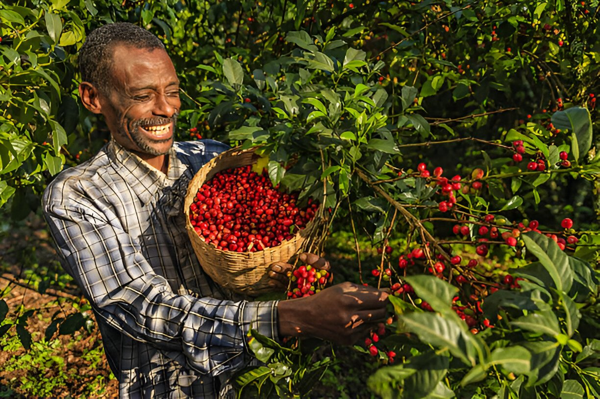

Sourcing
Coffee sourced from established growing regions across Uganda, with requirements discussed directly with buyers.
From Uganda to the world
Nkoma Commodities is an agricultural commodities trading company focused on supporting, promoting and exporting coffee grown and processed in Uganda.
What we do
Coffee sourced from established growing regions across Uganda, with requirements discussed directly with buyers.
Attention to handling, preparation and lot requirements before coffee moves to market.
Practical communication around preparation, documentation and shipment requirements.

Ugandan origins
Nkoma’s current presentation includes coffee from the Rwenzori region, Kisoro, Nyakishenyi, Mount Elgon and Bugisu. Each origin brings its own growing conditions and cup character.
Discover the originsCoffee offering
Washed and natural coffees, presented for serious trade conversations rather than a retail catalogue.
Enquire about current origin, grade, preparation and availability.
Discuss the current lots and buyer requirements with the Nkoma team.
Contact Nkoma for specifications and available preparations.
Begin with your volume, destination and quality requirements.
At origin


Tell us the origin, preparation, volume and destination you are considering.
Contact Nkoma